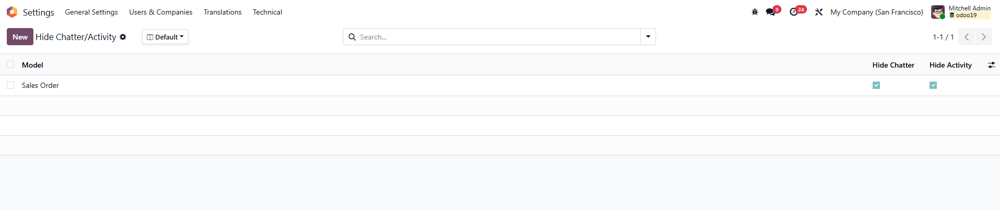

Clean up busy form views and declutter your interface. Easily choose which models should show or hide the entire chatter pane or schedule activities panel, configured directly from Settings without touching Python code or XML views.
Eliminates clutter from forms where communication history and activity logging are not needed, boosting user speed and focus.

Define rules per model in seconds. Select target models, toggle whether to hide chatter, activity, or both, and enjoy a cleaner form view instantly across the entire system.
Different workflows have different needs. Keep chatter active on Sales Orders and Helpdesk, while suppressing it on catalog items, configuration models, or internal records.
Rules are automatically delivered into session information and applied seamlessly via client-side controller patches. No sluggish page reloading or overhead.
Does not alter original view XML architectures or delete chatter logs. Disabling or removing a rule instantly restores the chatter without data loss.
Compare configured visibility against traditional custom view inheritance.
Three effortless steps to customize form chatter visibility.
Go to Settings > Technical > Database Structure > Hide Chatter/Activity.
Pick the target model (e.g., Contact, Product, or Custom Model) and check Hide Chatter or Hide Activity.
Save the rule. All users opening that model's form views will immediately see the clean layout.
We offer full support, enhancements, and custom Odoo development. Reach out anytime with questions or feedback.
Hide Chatter and Activity • Developed by Dyan • Community & Enterprise